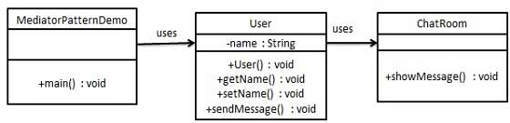
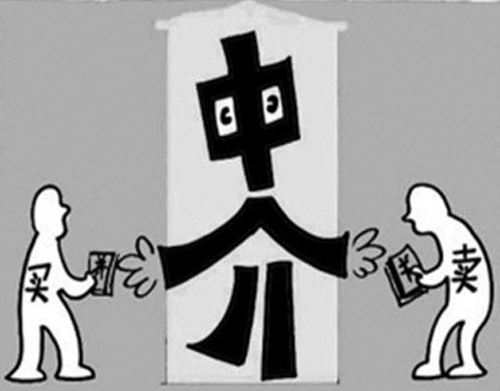
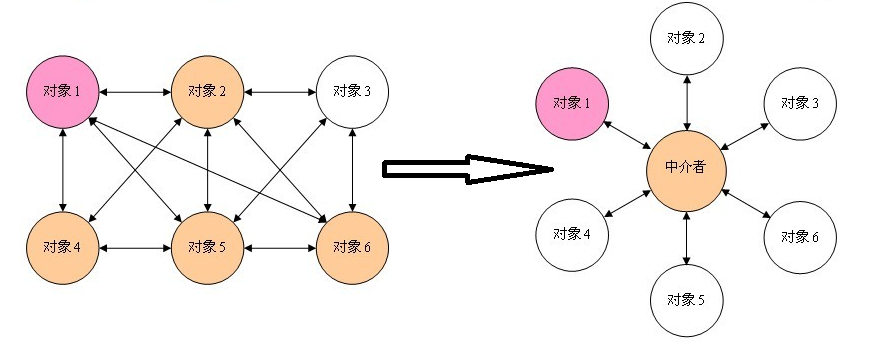
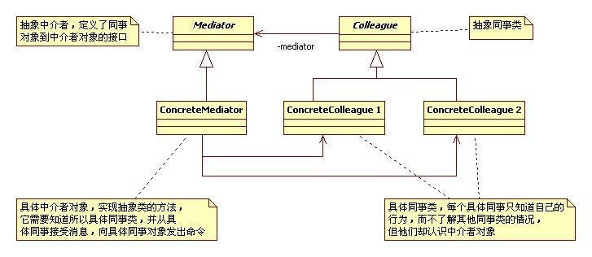

仲介者パターン
仲介者パターン（Mediator Pattern）は、複数のオブジェクトとクラス間の通信の複雑さを低減するために使用され、振る舞い型パターンに属します。
仲介者パターンは、一連のオブジェクト間の相互作用をカプセル化するための中介オブジェクトを定義します。仲介者は、各オブジェクトが明示的に相互参照する必要をなくし、それによって結合を疎結合にし、オブジェクト間の相互作用を独立して変更できるようにします。
紹介
意図
仲介者オブジェクトを導入して複数のオブジェクト間の相互作用をカプセル化および調整し、オブジェクト間の結合度を低減します。
主な解決する問題
- オブジェクト間の複雑な一対多の関連性の問題を解決し、オブジェクト間の高度な結合を回避し、システム構造を簡素化します。
使用シーン
- システム内の複数のクラスが相互に結合し、ネットワーク構造を形成している場合。
実装方法
- 仲介者インターフェースを定義する：仲介者が必ず実装しなければならないインターフェースを規定します。
- 具体的な仲介者を作成する：仲介者インターフェースを実装し、各同僚オブジェクトの相互作用を調整するロジックを含みます。
- 同僚クラスを定義する：各オブジェクトは明示的に相互参照する必要はなく、仲介者を通じて相互作用を行います。
キーコード
- 仲介者：オブジェクト間の相互作用ロジックをカプセル化します。
- 同僚クラス：仲介者を通じて通信します。
応用例
- WTO：中国がWTOに加盟した後、各国はWTOを通じて貿易を行い、二国間関係を簡素化しました。
- 空港管制システム：航空機の離着陸、滑走路の使用などを調整します。
- MVCフレームワーク：コントローラーがモデルとビューの仲介者として機能します。
長所
- 複雑さの低減：複数のオブジェクト間の一対多の関係を一対一の関係に変換します。
- 疎結合化：オブジェクト間は直接参照せず、仲介者を通じて相互作用します。
- デメテルの法則に適合：オブジェクトは仲介者を知っているだけでよく、他のオブジェクトを知る必要はありません。
短所
- 仲介者の複雑さ：仲介者が肥大化して複雑になり、保守が困難になる可能性があります。
使用上のアドバイス
- システム内のオブジェクト間に複雑な参照関係が存在する場合、仲介者パターンの使用を検討します。
- 仲介者を通じて複数のクラスの動作をカプセル化し、過剰なサブクラスの生成を回避します。
注意事項
- 責任が不明確または混乱している状況で仲介者パターンを使用することは避けてください。仲介者が過剰な責任を負う可能性があります。
構造
仲介者パターンには、以下の主要な役割が含まれます：
仲介者（Mediator）：各同僚オブジェクトと通信するためのインターフェースを定義し、各同僚オブジェクト間の関係を管理します。通常、さまざまな相互作用イベントを処理するための1つ以上のイベント処理メソッドが含まれます。
具体的な仲介者（Concrete Mediator）：仲介者インターフェースを実装し、各同僚オブジェクト間の通信ロジックの実装を担当します。各同僚オブジェクトへの参照を保持し、それらの相互作用を調整します。
同僚オブジェクト（Colleague）：仲介者と通信するためのインターフェースを定義します。通常、メッセージを送信するメソッドとメッセージを受信するメソッドが含まれます。
具体的な同僚オブジェクト（Concrete Colleague）：同僚オブジェクトのインターフェースを実装し、実際に相互作用に参加するオブジェクトです。自分のメッセージを仲介者に送信し、仲介者が他の同僚オブジェクトに転送します。
実装
チャットルームの例を通じて仲介者パターンをデモンストレーションします。この例では、複数のユーザーがチャットルームにメッセージを送信でき、チャットルームはすべてのユーザーにメッセージを表示します。2つのクラスを作成しますChatRoom 和 User。UserオブジェクトはChatRoomメソッドを使用してメッセージを共有します。
MediatorPatternDemo、デモクラスはUserオブジェクトを使用してそれらの間の通信を表示します。

ステップ 1
仲介クラスを作成します。
ChatRoom.java
ステップ 2
user クラスを作成します。
User.java
ステップ 3
使用してUserオブジェクトでそれらの間の通信を表示します。
MediatorPatternDemo.java
ステップ 4
プログラムを実行し、結果を出力します：
Thu Jan 31 16:05:46 IST 2013 [Robert] : Hi! John! Thu Jan 31 16:05:46 IST 2013 [John] : Hello! Robert!その他の拡張
zml1234
571***390@qq.com
参考リンク
仲介者パターンとは？

現実の生活には、仲介者パターンの例がたくさんあります。例えば、QQゲームプラットフォーム、チャットルーム、QQグループ、ショートメッセージプラットフォーム、不動産仲介などです。QQゲームであれQQグループであれ、それらは中間プラットフォームとして機能しています。QQユーザーはこの中間プラットフォームにログインして他のQQユーザーと交流できます。これらの中間プラットフォームがなければ、友人とチャットしたい場合、直接会う必要があるかもしれません。電話やショートメッセージも同様に中間プラットフォームです。この中間プラットフォームがあれば、各ユーザーは他のユーザーに直接依存する必要はなく、この中間プラットフォームに依存するだけでよく、すべての操作は中間プラットフォームが分配します。
仲介者パターンは、一連のオブジェクト間の相互作用関係をカプセル化するための中介オブジェクトを定義します。仲介者により、各オブジェクトは明示的に相互参照する必要がなくなり、結合性が低下し、オブジェクト間の相互作用動作を独立して変更できます。

設計の考え方とコード実装：

現実の生活におけるカードゲームの例を使って仲介者パターンを実装してみます。カードゲームには常に勝ち負けがあり、それに対応してお金の変動があります。仲介者パターンを使わない場合の実装は次のとおりです：
/// <summary> /// 抽象牌友类 /// </summary> public abstract class AbstractCardPartner { public int Money { get; set; } public abstract void ChangeMoney(int money, AbstractCardPartner other); } /// <summary> /// 牌友A /// </summary> public class PartnerA : AbstractCardPartner { public override void ChangeMoney(int money, AbstractCardPartner other) { Money += money; other.Money -= money; } } /// <summary> /// 牌友B /// </summary> public class PartnerB : AbstractCardPartner { public override void ChangeMoney(int money, AbstractCardPartner other) { Money += money; other.Money -= money; } } /// <summary> /// 调用 /// </summary> /// <param name="args"></param> static void Main(string[] args) { AbstractCardPartner A = new PartnerA(); A.Money = 20; AbstractCardPartner B = new PartnerB(); B.Money = 20; // A赢了B的钱减少 A.ChangeMoney(5, B); Console.WriteLine("A 现在的钱是：{0}", A.Money); // 应该是25 Console.WriteLine("B 现在的钱是：{0}", B.Money); // 应该是15 // B赢了A的钱减少 B.ChangeMoney(10, A); Console.WriteLine("A 现在的钱是：{0}", A.Money); // 应该是15 Console.WriteLine("B 现在的钱是：{0}", B.Money); // 应该是25 Console.ReadLine(); }このような実装は確かに上記のシナリオの問題を解決しており、抽象クラスを使用して具体的なプレイヤーAとプレイヤーBの両方を抽象クラスに依存させることで、同僚クラス間の結合度を低減しています。しかし、プレイヤーAに変化が生じた場合、プレイヤーBの状態に影響を及ぼします。関与するオブジェクトが増えると、あるプレイヤーの変化が他のすべての関連するプレイヤーの状態に影響を与えることになります。例えば、プレイヤーAが金額を計算し間違えた場合、プレイヤーAとプレイヤーBの両方の金額が正しくなくなります。複数人でカードゲームをしている場合は、影響を受けるオブジェクトはさらに多くなります。そこで考えられるのは——お金の計算タスクをプログラムや計算が得意な人に任せられないか、ということです。こうしてQQゲームの「欢乐斗地主」などのカードゲームが生まれました。
さらに改善された方案は、仲介者オブジェクトを追加して各オブジェクト間の関連を調整することです。これが仲介者パターンの応用です。改善後の具体的な実装コードは次のとおりです：
/// <summary> /// 抽象牌友类 /// </summary> public abstract class AbstractCardPartner { public int Money { get; set; } public abstract void ChangeMoney(int money, AbstractMediator mediator); } /// <summary> /// 牌友A /// </summary> public class PartnerA : AbstractCardPartner { public override void ChangeMoney(int money, AbstractMediator mediator) { mediator.AWin(money); } } /// <summary> /// 牌友B /// </summary> public class PartnerB : AbstractCardPartner { public override void ChangeMoney(int money, AbstractMediator mediator) { mediator.BWin(money); } } /// <summary> /// 抽象中介者类 /// </summary> public abstract class AbstractMediator { protected AbstractCardPartner A; protected AbstractCardPartner B; public AbstractMediator(AbstractCardPartner a, AbstractCardPartner b) { A = a; B = b; } public abstract void AWin(int money); public abstract void BWin(int money); } /// <summary> /// 调用 /// </summary> /// <param name="args"></param> static void Main(string[] args) { AbstractCardPartner A = new PartnerA(); AbstractCardPartner B = new PartnerB(); A.Money = 20; B.Money = 20; AbstractMediator mediator = new MediatorPater(A, B); // A赢了 A.ChangeMoney(5, mediator); Console.WriteLine("A 现在的钱是：{0}", A.Money); // 应该是25 Console.WriteLine("B 现在的钱是：{0}", B.Money); // 应该是15 // B赢了 B.ChangeMoney(10, mediator); Console.WriteLine("A 现在的钱是：{0}", A.Money); // 应该是15 Console.WriteLine("B 现在的钱是：{0}", B.Money); // 应该是25 Console.ReadLine(); }上記の実装コードでは、抽象仲介者クラスが2つの抽象プレイヤークラスを保持しています。新しいプレイヤーを追加する場合、この抽象仲介者クラスを変更せざるを得ません。この問題を解決するには、観察者パターンを組み合わせることができます。つまり、抽象仲介者オブジェクトが抽象プレイヤーのリストを保持し、RegisterメソッドとUnRegisterメソッドを追加してそのリストを管理し、具体的な仲介者クラスでAWinメソッドとBWinメソッドを修正して、リストを走査し、自分自身と他のプレイヤーの金額を変更します。このような設計にはまだ問題が1つあります——新しいプレイヤーを追加する場合、抽象仲介者クラスを変更する必要がないという問題は解決されますが、具体的な仲介者クラスを変更せざるを得ず、つまりCWinメソッドを追加する必要があります。この問題を解決するには、状態パターンを採用できます。状態パターンの紹介は次の記事で行います。
仲介者パターンの長所と短所
長所：
短所：
仲介者パターンの適用シーン
以下の状況では仲介者パターンの使用を検討できます：
zml1234
571***390@qq.com
参考リンク
Lb
lb_***@163.com
上記の不足している仲介実装クラス：
public class Mediator extends AbstractMediator { public Mediator(AbstractCardPater a, AbstractCardPater b){ super(a, b); } @Override public void AWin(int money, AbstractCardPater abstractCardPater) { A.Money += money; int tmp = abstractCardPater.getMoney() - money; abstractCardPater.setMoney(tmp); } @Override public void BWin(int money, AbstractCardPater abstractCardPater) { B.Money += money; int tmp = abstractCardPater.getMoney() - money; abstractCardPater.setMoney(tmp); } }また、上記の main() 関数のロジックに問題がありますA.ChangeMoney(5, B, mediator);敗者を追加すべきです。
Lb
lb_***@163.com
Lonnie
354***093@qq.com
Swift実装：
struct User { var name: String func sendMessage(message: String) { ChatRoom.showMessage(user: self, message: message) } } struct ChatRoom { static func showMessage(user: User, message: String) { print("\(Date().description)[\(user.name)]: \(message)") } } let robert = User(name: "Robert") let john = User(name: "John") robert.sendMessage(message: "Hi! John!") john.sendMessage(message: "Hi! Robert!")Lonnie
354***093@qq.com
Siskin.xu
sis***@sohu.com
Python コード：
# Mediator Pattern with Python Code from abc import abstractmethod,ABCMeta import time #创建中介类ChatRoom class ChatRoom(): @staticmethod def showMessage(inUser,inMessage): locTime = time.strftime("%Y-%m-%d %H:%M:%S", time.localtime()) print("{0} [{1}] : {2}".format(locTime,inUser.getName(),inMessage)) # 创建User类 class User(): _name = "" def getName(self): return self._name def setName(self,inName): self._name = inName def __init__(self,inName): self._name = inName def sendMessage(self,inMessage): ChatRoom.showMessage(self,inMessage) # 调用输出 if __name__ == '__main__': robert = User("Robert") john = User("John") robert.sendMessage("Hi, John!") john.sendMessage("Hello,Robert!")Siskin.xu
sis***@sohu.com